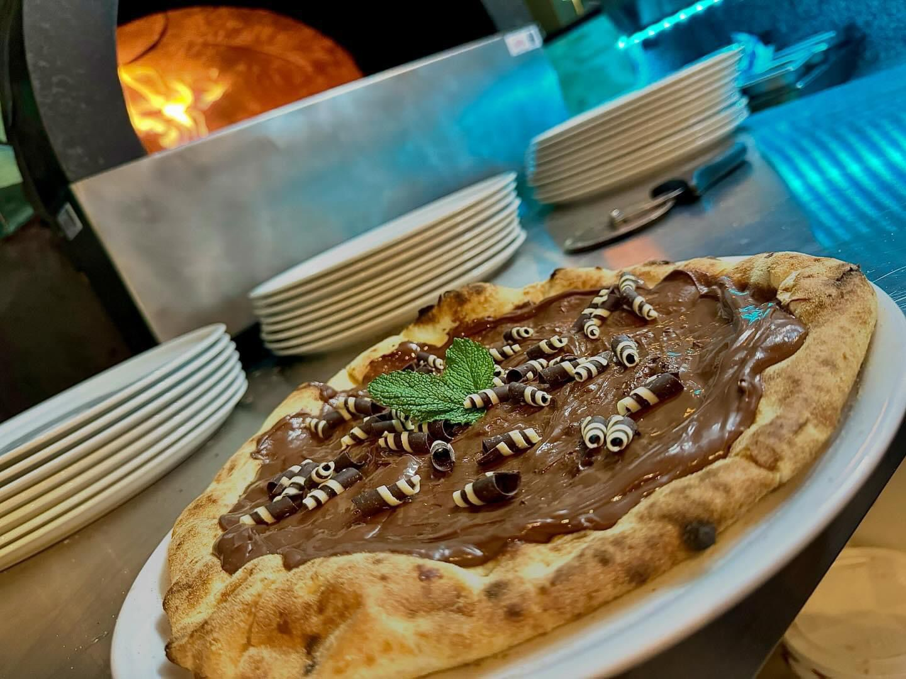
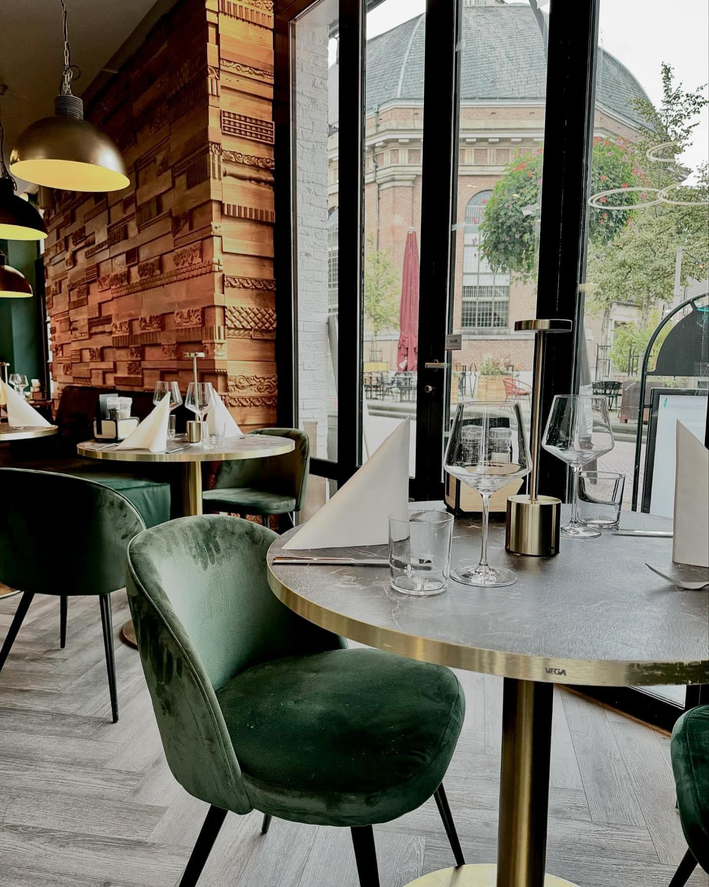
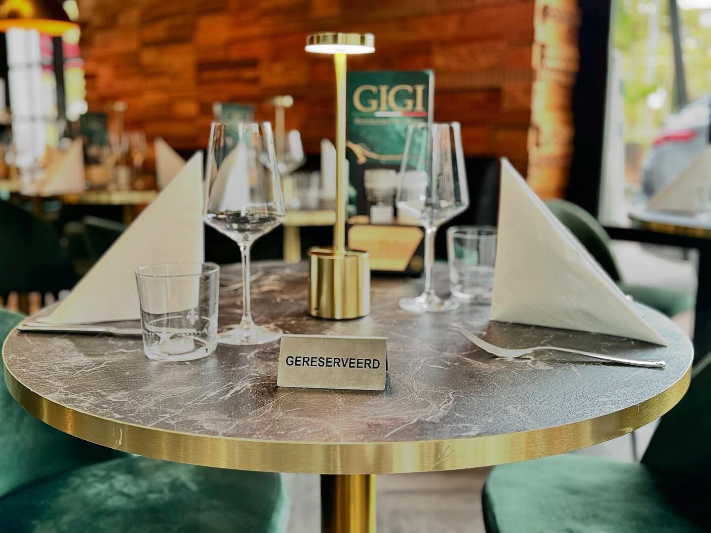
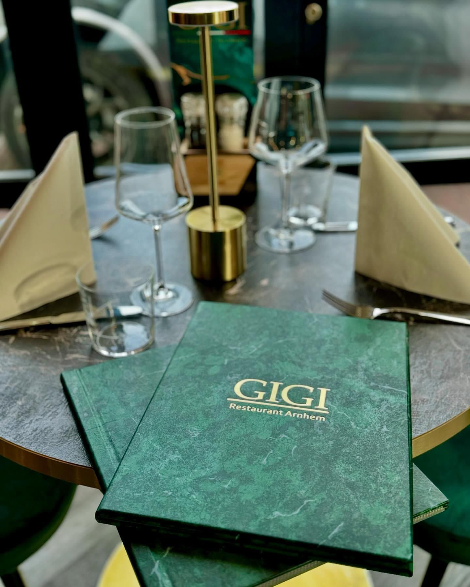
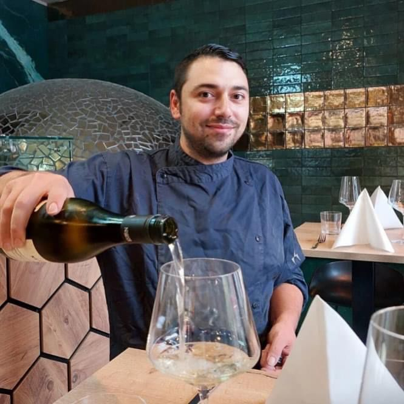
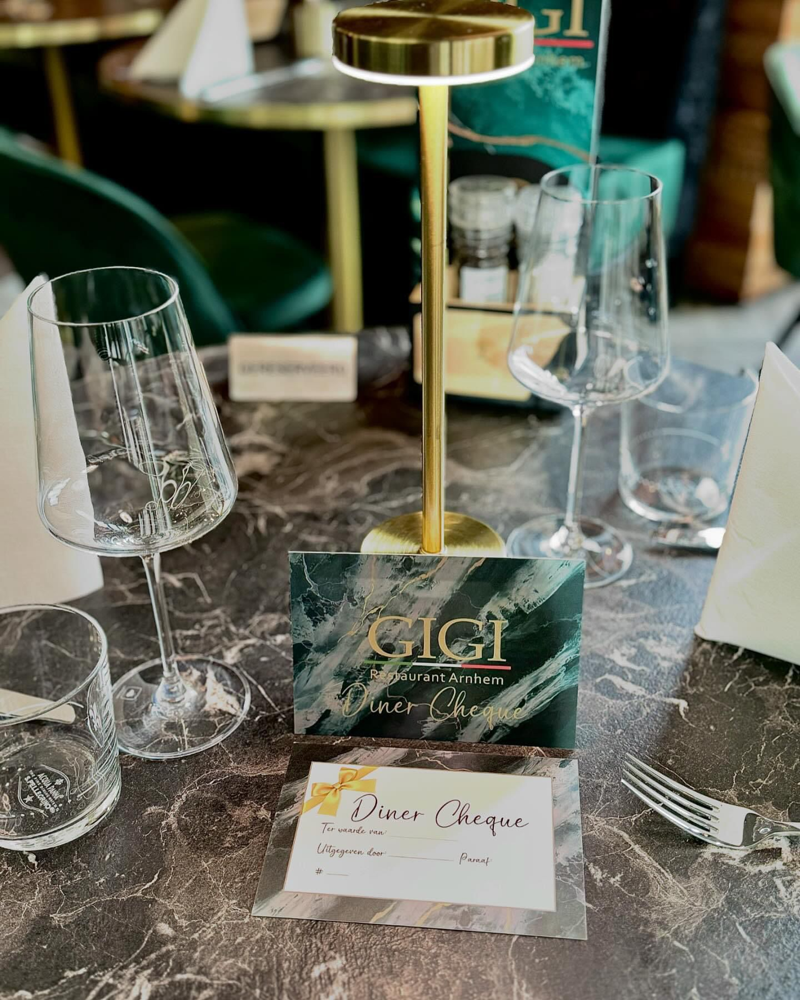
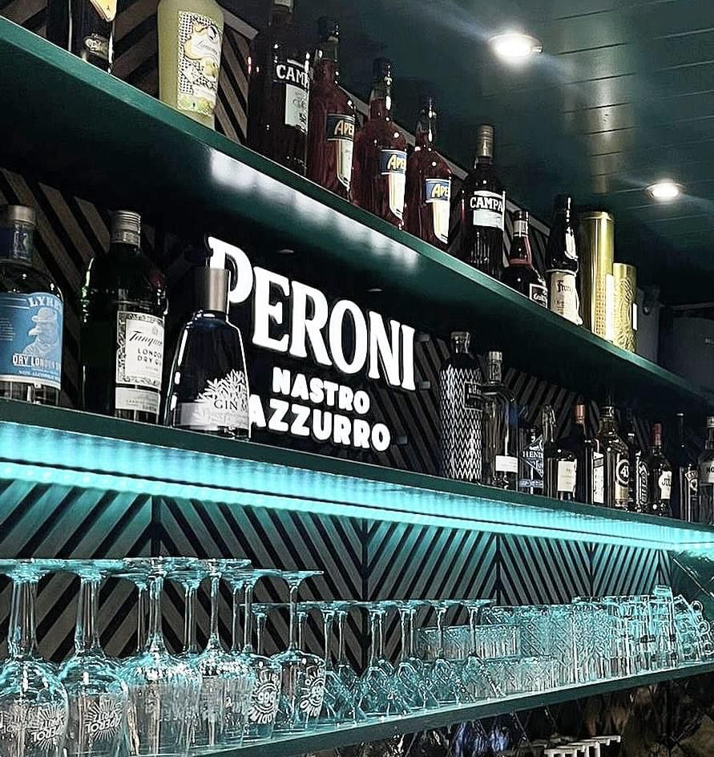

Pizza's
Wij hebben de echte Napolitaanse houtovenpizza's, van Margherita tot de Gigi met burrata, truffel en bladgoud.
Naar de pizza'sGigi
Italiaans restaurant aan de Jansplaats, Arnhem
Gerechten uit heel Italië, bereid met verse kruiden, extra vergine olijfolie en grof zeezout. En natuurlijk echte Napolitaanse pizza uit de houtoven.
Dinsdag t/m zondag vanaf 17:00

De Italiaanse hotspot in Arnhem, waar wij iedereen een klein stukje Italië laten beleven.
Onze menukaart heeft gerechten uit heel Italië, met liefde voor u klaargemaakt door onze Italiaanse koks en natuurlijk onze pizzaiolo.
De Italiaanse keuken, door UNESCO erkend als immaterieel cultureel erfgoed, is de basis van alles wat we maken. Eigenaar Gigi, chef-kok Michele en het keukenteam koken met respect voor traditie en herkomst. Alles draait om kwaliteit, eenvoud en verfijning, precies zoals de Italiaanse keuken bedoeld is.
Bij Gigi wordt u niet alleen verliefd op de Italiaanse keuken: u gaat ook naar huis met het gevoel even in Italië op vakantie te zijn geweest.


Wij hebben de echte Napolitaanse houtovenpizza's, van Margherita tot de Gigi met burrata, truffel en bladgoud.
Naar de pizza's
Antipasti, vlees van de grill, verse vis, pasta en risotto, pizza en huisgemaakte desserts.
Naar de dinerkaart
Vraag naar onze wijnselectie, afkomstig uit heel Italië.
Reserveer een tafel
Wie aan Italië denkt, denkt aan een lange gedekte tafel, warmte, gezelligheid en heerlijk Italiaans eten.
Zoekt u een plek voor een feest of diner met een groot gezelschap, zakelijk of privé? Bij Gigi kunt u met een grote groep terecht, wij zorgen voor de rest. Of het nu gaat om een intiem diner of een feestelijke avond: wij vieren het leven zoals dat in Italië gebeurt, met goed eten, mooie momenten en een warme, gastvrije sfeer.
Een kijkje in het restaurant en de keuken.

Online reserveren voor vandaag kan tot maximaal 4 uur van tevoren. Daarna alleen telefonisch: 026 379 02 31.
Bij het maken van een reservering gaat u akkoord met deze voorwaarden:
Bij ons maken we niet alleen heerlijke Italiaanse gerechten, we bouwen ook aan een werkplek waar passie en teamwork centraal staan. Iedereen moet zich gewaardeerd en geïnspireerd voelen. Zoek je een dynamische en gezellige werkomgeving? Dan ben je bij ons aan het juiste adres.
Heeft u vragen of wilt u reserveren? Neem gerust contact met ons op.